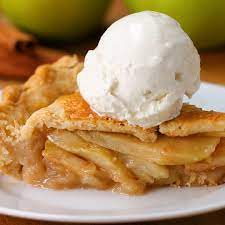

Apple Pie

Description
The is a recipe for a fabulous home-cooked apple pie that you can enjoy with friends or family. This recipe will server approximately 6 people. Enjoy!
Ingredients
Pie Dough
- 315g flour
- 1 teaspoon salt
- 1 1/2 sticks of butter
- 8 tablespoons ice water
Filling
- 1kg Apples
- 150g sugar
- 2 tablespoons flour
- 1/2 teaspoon salt
- 1 teaspoon cinnamon
- 1/4 teaspoon nutmeg
- 1/2 lemon
- 1 egg, beaten
- 1 tablespoon sugar
Steps
- In a medium-sized bowl, add the flour and salt. Mix with fork until combined.
- Add in cubed butter and break up into flour with a fork. Mixture will still have lumps about the size of small peas.
- Gradually add the ice water and continue to mix until the dough starts to come together. You may not need all of the water, but if the dough is too dry then add more. The dough should not be very tacky or sticky.
- Work the dough together with your hands and turn out onto a surface. Work into a ball and cover with cling wrap. Refrigerate.
- Peel the apples, then core and slice.
- In a bowl, add the sliced apples, sugar, flour, salt, cinnamon, nutmeg, and juice from the lemon.
- Mix until combined and all apples are coated. Refrigerate.
- Preheat the oven to 375°F (200°C).
- On a floured surface, cut the pie dough in half and roll out both halves until round and about ⅛-inch (3 mm) thick.
- Roll the dough around the rolling pin and unroll onto a pie dish making sure the dough reaches all edges. Trim extra if necessary.
- Pour in apple filling mixture and pat down.
- Roll the other half of the dough on top.
- Trim the extra dough from the edges and pinch the edges to create a crimp. Make sure edges are sealed together.
- Brush the pie with the beaten egg and sprinkle with the sugar.
- Cut four slits in the top of the pie to create a vent.
- Bake pie for 50-60 minutes or until the crust is golden brown and no greyish or undercooked pastry remains.
- Allow to cool completely before slicing.
- Top with ice cream and serve.